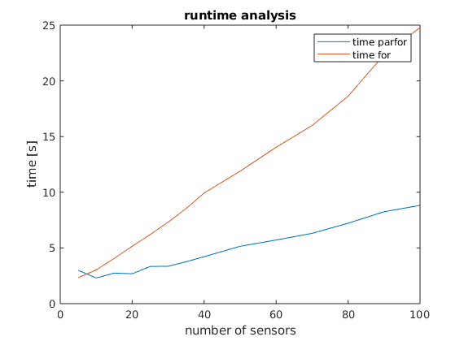

Using ALADIN-\alpha with parfor
Here we consider a sensor network localization problem from the SIAM ALADIN paper. We illustrate, how the parfor option of ALADIN-\alpha can be used for parallel execution. For this example the MATLAB parallel computing toolbox is required.
Problem setup
Let N be the number of sensors and let \chi_i =(x_i,y_i)^\top \in \mathbb{R}^2 be the unknown position of the ith sensor, let \eta_i be its estimated position, let \xi_ibe the position of senosor i+1 estimated by sensor i let \bar{\eta_i} be the estimated distance between sensor i and its neighbors. The measurement error is given by \eta_i - \chi_i and is assumed to be Gaussian distributed with variance \sigma_i^2 I_{2 \times 2}. We further denote the measured distance between sensor i and sensor i + 1 by \bar{\eta_i}. If we define the decision variable as x_i = (\chi_i^\top, \xi_i^\top)^\top \in \mathbb{R}^4 then we obtain the overall problem
\begin{aligned}
\displaystyle \min_x &\sum_{i = 1}^N f_i(x_i)\quad \\
\text{ s.t. } &\quad h_i(x_i) \leq 0 \quad \forall i \in \{1, \dots, N\}\\
& \quad\xi_i = \chi_{i+1} \quad \text{ }\text{ }\forall i \in \{1, \dots, N\}
\end{aligned}
with
f_i(x_i)=\frac{1}{4\sigma_i^2}\vert\vert\chi_i - \eta_i\vert\vert_2^2 + \frac{1}{4\sigma_{i+1}^2}\vert\vert\xi_i - \eta_{i+1}\vert\vert_2^2 + \frac{1}{2\sigma_{i+1}^2}(\vert\vert\chi_i - \xi_i\vert\vert_2^2 - \bar{\eta}_i)^2 and
h_i(x_i) = (\vert\vert\chi_i - \xi_i\vert\vert_2 - \bar{\eta_i})^2 - \bar{\sigma_i}^2 .
Implementation
For the implementaiton, firstly the problem needs to be defined in a way that is compatible to ALADIN-\alpha. The definitions of variables and functions are executed in separate functions: for the computation of \eta_i and \bar{\eta_i} the sensors are assumed to be equidistantly located in a circle, i.e.
$$
\chi_i = \left(N \cos (\frac{2i\pi}{N}), N \sin (\frac{2i\pi}{N})\right).
$$
The measuremnt errors are assumed to be normal distributed with variance sigma. The neighbour of sensor n is assumed to be sensor 1, thus we define \eta_{n+1} = \eta_1. So we get:
1
2
3
4
5
6
7
8
9
10
11
12
13
14
15 | function [eta,eta_bar] = getEta(N, d, sigma)
% returns by sensor estimated initial position and distance to its neighbours
eta = zeros(d, N + 1);
eta_bar = zeros(1, N);
for i = 1 : N
eta( :, i ) = [N * cos(2 * i * pi / N) + normrnd(0, sigma) ; ...
N * sin(2 * i * pi / N) + normrnd(0, sigma)];
eta_bar(i) = 2 * N * sin( pi / N) + normrnd(0, sigma);
end
eta(:, N + 1) = eta(:, 1);
end
|
Implementing f and h as above we obtain
| function [F] = getObjective(N, y, eta, eta_bar, sigma)
F = zeros(N, 1);
F = sym(F);
F(:) = 1 / (4 * sigma^2) * ((y(1, :) - eta(1, 1 : N)).^2 + (y(2, :) - eta(2, 1 : N)).^2) ...
+ 1 / (4 * sigma^2) * ((y(3, :) - eta(1, 2 : end)).^2 + (y(4, :) - eta(2, 2 : end)).^2) ...
+ 1 / (2 * sigma^2) * (sqrt((y(1, :) - y(3, :)).^2 + (y(2, :) - y(4, :)).^2) - eta_bar(:)').^2;
end
|
and
| function [H] = getInequalityConstr(N, y, eta_bar)
H = zeros(N, 1);
H = sym(H);
H(:) = (sqrt((y(1, :) - y(3, :)).^2 + (y(2, :) - y(4, :)).^2) - eta_bar(:)').^2;
end
|
The coupling condition \xi_i = \chi_{i+1} can be formulated as \sum A_ix_i = 0 with
A_1 = \begin{pmatrix} 0 & I \\
0 & 0 \\
0 & 0 \\
\vdots & \vdots \\
0 & 0 \\
-I & 0
\end{pmatrix}, \;
A_2 = \begin{pmatrix} -I & 0 \\
0 & I \\
0 & 0 \\
\vdots & \vdots \\
0 & 0 \\
0 & 0
\end{pmatrix}, \;
A_3 = \begin{pmatrix} 0 & 0 \\
-I & 0 \\
0 & I \\
\vdots & \vdots \\
0 & 0 \\
0 & 0
\end{pmatrix}, \; \cdots \;, \;
A_N = \begin{pmatrix} 0 & 0 \\
0 & 0 \\
0 & 0 \\
\vdots & \vdots \\
-I & 0 \\
0 & I
\end{pmatrix}
while setting
I = \begin{pmatrix} 1 & 0 \\ 0 & 1 \end{pmatrix}
In Matlab this can be implemented as follows:
1
2
3
4
5
6
7
8
9
10
11
12
13
14
15
16
17 | function [AA] = getCouplingMatrix(N, n)
I = [1, 0; 0, 1];
A0 = zeros(2*N, n);
A1 = A0;
A1(1:2, 3:4) = I;
A1(2*N - 1: 2*N, 1:2) = -I;
AA(1) = mat2cell(A_1, 2 * N, n);
for i = 2 : 1 : N
A_i = A0;
A_i(2*(i-2) + 1 : 2*(i-2) + 2, 1:2) = -I;
A_i(2*i - 1: 2*i, 3:4 ) = I;
AA(i) = mat2cell(A_i, 2*N, n);
end
end
|
A start vector can be defined similarly to the estimated positions:
1
2
3
4
5
6
7
8
9
10
11
12
13
14
15 | function [zz0] = getStartValue(N, sigma)
initial_position = zeros(2, N);
for i = 1 : N
initial_position(1, i) = N * cos( 2 * i * pi / N ) + normrnd(0, sigma);
initial_position(2, i) = N * sin( 2 * i * pi / N ) + normrnd(0, sigma);
end
zz0 = cell(1, N);
for i = 1 : N-1
zz0(i) = {[initial_position(:, i); initial_position(:, i + 1)]};
end
zz0(N) = {[initial_position(:, N); initial_position(:, 1)]};
end
|
such that the overall problem can be set up with the following function:
1
2
3
4
5
6
7
8
9
10
11
12
13
14
15
16
17
18
19
20
21
22
23
24
25
26
27
28
29
30
31
32
33
34
35
36
37
38
39
40
41
42
43 | function [sProb ] = setupSolver(N, sigma)
% general setup
n = 4; % dimension of design variables
d = 2; % dimension of coordinate system
% initialization of variables
y = sym('y%d%d', [N n], 'real');
y = y';
[eta, eta_bar] = getEta(N, d, sigma); % definition of estimated initial positions
F = getObjective(N, y, eta, eta_bar, sigma); % definition of objective functions
H = getInequalityConstr(N, y, eta_bar); % definition of inequality constraint
AA = getCouplingMatrix(N, n); % definition of coupling matrix
zz0 = getStartValue(N, sigma); % definition of start value for optimization
%% setting up solver
% set search area
sProb.llbx = cell(1, N);
sProb.uubx = cell(1, N);
for i = 1 : N
sProb.llbx(i) = mat2cell([-inf; -inf; -inf; -inf], 4, 1);
sProb.uubx(i) = mat2cell([ inf; inf; inf; inf], 4, 1);
end
% handover of functions
sProb.locFuns.ffi = cell(1, N);
sProb.locFuns.hhi = cell(1, N);
for i = 1 : N
sProb.locFuns.ffi(i) = {matlabFunction(F(i), 'Vars', {y(:, i)})} ;
sProb.locFuns.hhi(i) = {matlabFunction(H(i), 'Vars', {y(:, i)})} ;
end
sProb.AA = AA;
sProb.zz0 = zz0;
|
Runtime Analysis
For the runtime analysis, the idea is to ŕun the sensor network localization problem with varying number of sensors both with a decentral and a central optimization step. To do so, firstly a vector with a number of sensors is needed and secondly a vector with variances. Then, the time needed for the decentral and the central optimization is measured and can be plotted.
1
2
3
4
5
6
7
8
9
10
11
12
13
14
15
16
17
18
19
20
21
22
23
24
25 | N = [5, 10, 15 , 20, 25, 30, 35, 40, 50, 60, 70, 80, 90, 100];
sigma = [0.5, 1, 1.5, 2, 2.5, 2.5, 2.5, 2.5, 2.5, 2.5, 2.5, 2.5, 2.5, 2.5];
time = zeros(2, length(N));
for i = 1 : length(N)
sProb = setupSolver(N(i), sigma(i));
opts.parfor = 'true'
time_parfor = tic;
sol = run_ALADINnew(sProb, opts);
time(1, i) = toc(time_parfor);
time_for = tic;
sol = run_ALADINnew(sProb, opts);
time(2, i) = toc(time_for);
end
figure
plot(N, time(1, :))
title('runtime analysis')
hold on
plot(N, time(2, :))
hold off
legend('decentral optimization', 'central optimization')
|
Result
The runtime result can be obtained from the following figure.

Thus, for the case of the senor network localization problem a significant runtime improvement can be observed when the parfor option is set. Nonetheless it needs to be mentioned that an improvement on the runtime cannot always be achieved for every problem setup using the parfor option. In general, parfor is useful when the number of local optimization problems is large and the time for solving each of the local optimization problems is relatively long. For details, see decide when to use parfor